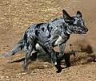
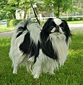
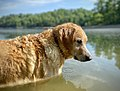
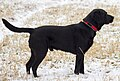
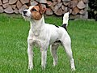
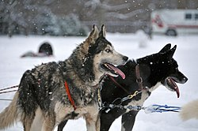

Dogs are animals
The dog (Canis familiaris or Canis lupus familiaris) is a domesticated descendant of wolves. Also called the domestic dog, it was selectively bred during the Late Pleistocene by hunter-gatherers. Dogs and the modern gray wolf share a common ancestor.[4] Dogs were the first species to be domesticated over 14,000 years ago, before the development of agriculture, though genetic studies suggest the domestication process may have begun over 25,000 years ago. Due to their long association with humans, dogs have gained the ability to thrive on a starch-rich diet that would be inadequate for other canids.
Dogs have been bred for desired behaviors, sensory capabilities, and physical attributes. Dog breeds vary widely in shape, size, and color. They have the same number of bones (with the exception of the tail), powerful jaws that house around 42 teeth, and well-developed senses of smell, hearing, and sight. Compared to humans, dogs possess a superior sense of smell and hearing, but inferior visual acuity. Dogs perform many roles for humans, such as hunting, herding, pulling loads, protection, companionship, therapy, aiding disabled people, and assisting police and the military.